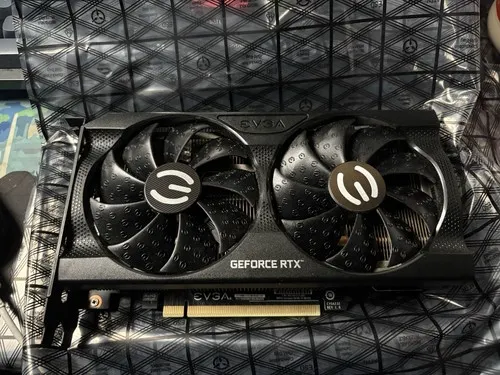

Serie RTX 3000
NVIDIA GeForce RTX 3050
La NVIDIA GeForce RTX 3050 es una tarjeta gráfica de entrada basada en la arquitectura NVIDIA Ampere. Ideal para jugar en 1080p con Ray Tracing y DLSS a un precio muy accesible.
- Arquitectura NVIDIA Ampere
- Memoria 8 GB GDDR6
- Interfaz de memoria 128 bits
- Velocidad de memoria 14 Gbps
- Ancho de banda 224 GB/s
- Núcleos CUDA 2,560
- Núcleos RT 20 (2.ª generación)
- Núcleos Tensor 80 (3.ª generación)
- Frecuencia base 1,552 MHz
- Frecuencia Boost Hasta 1,777 MHz (Founders Edition)
- Interfaz PCI Express 4.0 x8
- Consumo (TDP) 130 W
- Fuente recomendada 550 W
- Salidas de video 3 × DisplayPort 1.4a, 1 × HDMI 2.1
- Resolución máxima 7680 × 4320 (8K)
- Tecnologías Ray Tracing, DLSS, NVIDIA G-SYNC, DirectX 12 Ultimate, OpenGL 4.6, Vulkan
$159.99
Realizar pedido